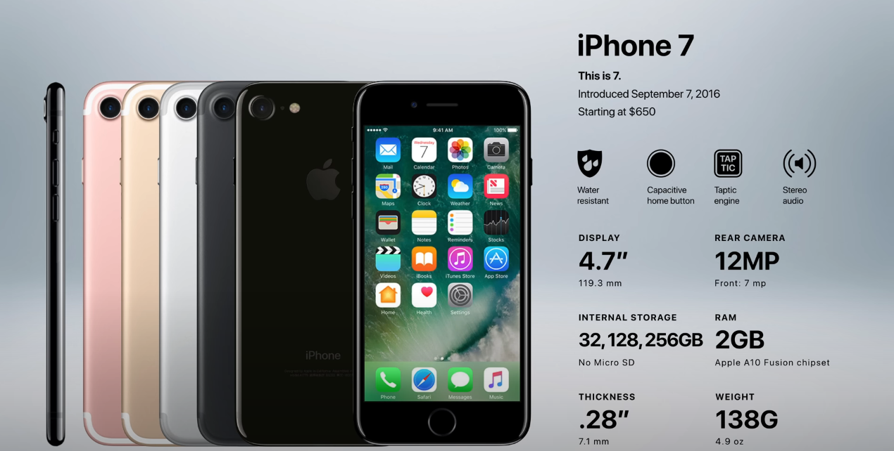
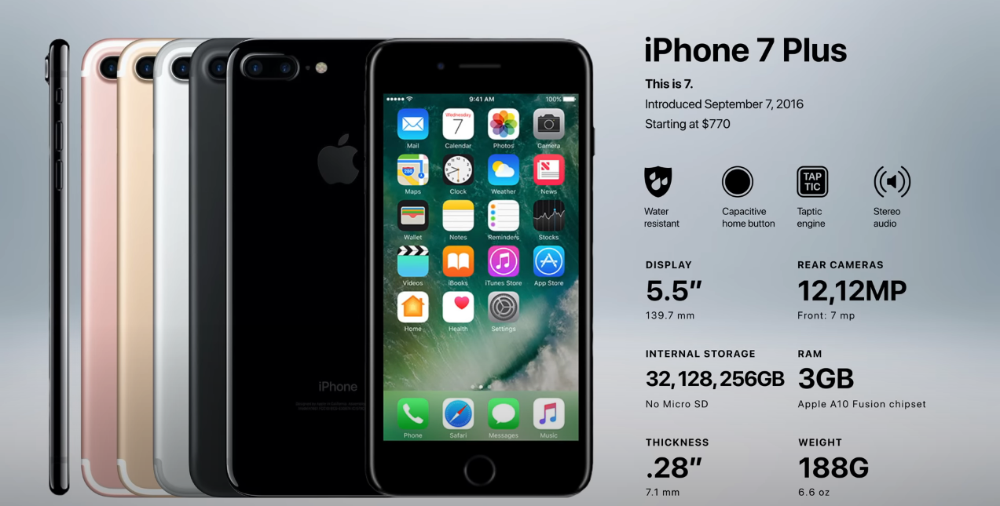

Generation 11: iPhone 7 and 7 Plus
Release Date: September 16, 2016
Apple released the iPhone 7 and 7 Plus a year after the iPhone 6 and 6 Plus. The new phones looked similar to the previous models, but there was one major difference: Apple removed the headphone jack. This meant that users would have to connect their headphones to the phone using Bluetooth, which was a new requirement for iPhone users. The decision to remove the headphone jack was controversial, and many people criticized Apple for making the change. However, Apple defended the decision, saying that it was necessary to make the phone more water-resistant and to free up space for other components. Ultimately, the decision to remove the headphone jack was a gamble by Apple. It was a move that could have alienated some customers, but it also had the potential to make the iPhone more appealing to others. Only time will tell whether Apple's gamble will pay off.
 Specification
- 7-megapixel front-facing camera
- Apple A10 quad-core, 64-bit, 2.3 GHz processor with 2GB RAM (3GB for 7 Plus)
- M10 Motion Coprocessor
- Stereo speakers
- iOS 10
- 14 (7)/21(7+) hours talk time on 3G
- 12/13 hours of web browsing time on 3G
- 12/13 hours of web browsing time on LTE
- 14/15 hours of battery life on WiFi
- 13/14 hours of battery life for videos
- 40/60 hours of battery life for just music
- 32GB, 128GB, 256GB ($449-659)